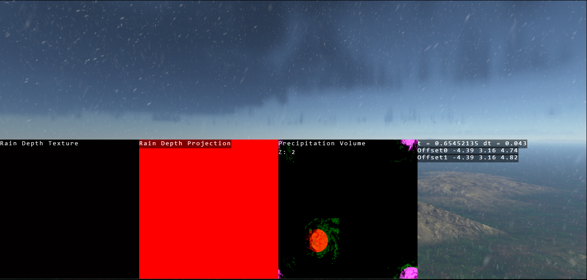
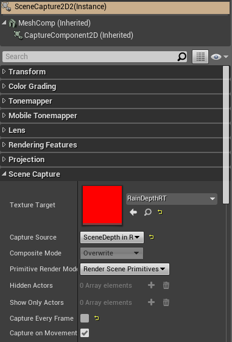
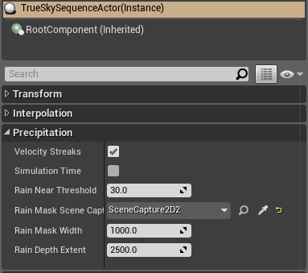

Precipitation Tutorial¶
Overview¶
Precipitation is controlled by cloud keyframes under the Precipitation section in the Properties window. By default, precipitation is unbound. This means as long as you are underneath clouds of a specified thickness:doc:(Threshold Km)</precipitationvariables>, precipitation will be visible. Alternatively, in the properties panel of a cloud keyframe we have an checkbox for Regional precipitation. The regional bounding limits the range and position of the precipitation; also called precipitation regions. These regions can be positioned and moved at runtime. A Cloud Map Texture, which are explained later, also act to bound the precipitation by defining the shape of the clouds (see section on Cloud Map Texture).
Precipitation regions are associated with their keyframe and as such their parameters, such as Radius, Strength and Rain - Snow, along with their position on the globe, are interpolated over time.
Cloud Window¶
After selecting a cloud keyframe from the timeline you wish to modify, you see a light blue box with a light blue shaded circle appear. This represents the static cloud keyframe - precipitation region pair; there will be one of these ‘static’ pairs per selected cloud keyframe from the timeline.
To move a precipitation region, click on the cloud window to select the window focus. Then use Shift + Left Click to drag the precipitation region. Remember that the precipitation region’s position is relative to the position of its cloud keyframe, such that moving the cloud keyframe (with Left Click) will also cause the precipitation region move. The size of precipitation regions is modified by the Radius parameter in the Properties page, and these size changes are reflected in the Cloud Window.
To learn more about the Cloud Window, please view this tutorial.

Cloud Map Texture¶
A cloud map texture can be added to a cloud layer via its Properties window. This acts as a mask for both the cloud and precipitation generation. In terms of precipitation, this mask restricts the area in which precipitation can fall. This mask works in conjunction with the precipitation region to refine further shape of the precipitation volumes.
Wind Speed Affecting Rain¶
Wind speed affects the direction and angle at which the rain will fall within the scene. By altering the wind speed variable within the trueSKY actor, you will be able to alter this. In addition the control “Precipitation Wind Effect” found within the precipitation section of the trueSKY actor will allow you to set how much the wind affects the precipitation angle.
Precipitation under cover?¶
Unreal¶
To prevent precipitation from falling in covered areas, create a SceneCapture2D actor and give it a texture target that contains only a red channel; e.g. RainDepthRT from the trueSKY content. Make the Capture Source “SceneDepth in R”. You don’t need to enable “Capture Every Frame” unless you expect the geometry to change.
Rotate the SceneCapture2D actor to face downwards.
On the trueSKY Sequence Actor, assign the SceneCapture2D actor to the Rain Mask SceneCapture property. Now precipitation will only appear where there is no cover above the SceneCapture actor.
